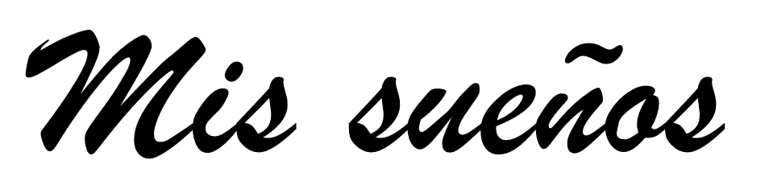

Ejerso la valentia diariamente al momento de afrontar el miedo de fallar todos los dias
Honestidad
Expreso honestidad en los momentos donde tengo que hablar la verdad para que nadie salga perjudicacdo injustamente
Determinacion
Soy determinante al momento en el que no me rindo ante las adversidades o dificultades que se me presentan en los probelmas que se pueden llegar a presentar en ala vida diaria
Justicia
yo lelgo a utilizar la justicia en el momento que defiendo las acciones, resultados o situaciones que me parecen ir en contra de mis creencias y en contra de lo que a mis prespectiva va tentativamente a afectar lo correcto.
Tolerancia
yo llego a ser bastante tolerante ante los actos que llegan a fastidiar mi paz o mi estatus cuo y lo demuestro cada dia con mis compañeros.

Ser medico
uno de mis mayores sueños es llegar a ser un medico y ayudar a la comunidad a tratar sus enfermedades
Representar a Guatemala
Este sueño es representar a guatemala en el mundo del Freestyle a nivel internacional y ganar esa internacional
Encontrar el amor
este sueño viene de querer experimentar una conexion verdadera con otra persona y llegarla a apresiar y sentirme apresiado